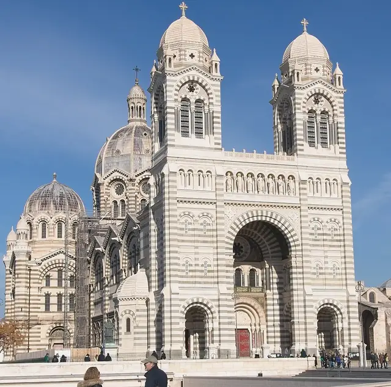
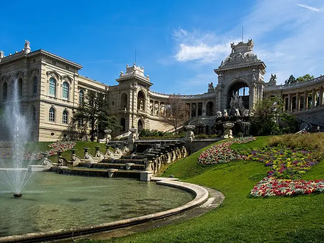
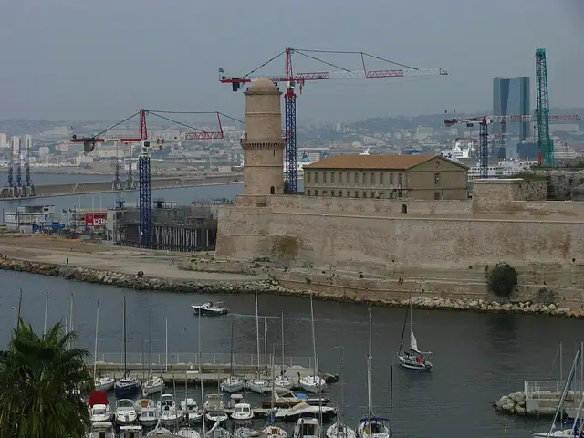
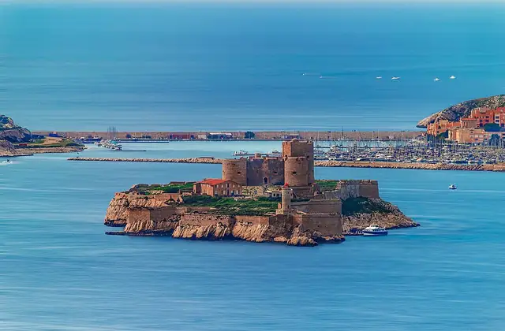
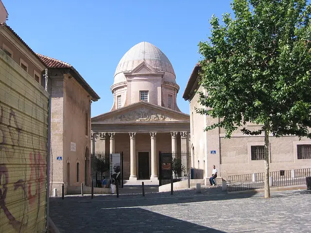
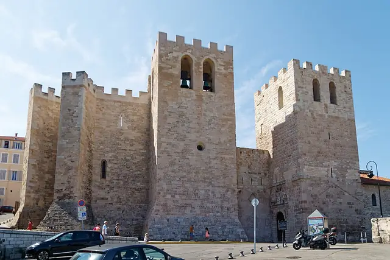
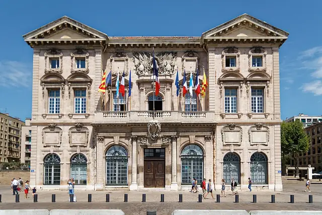
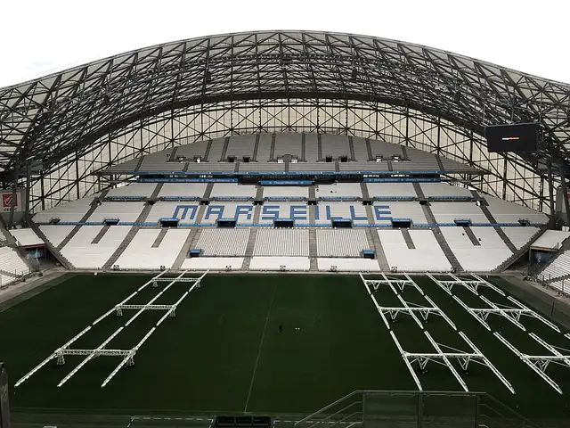
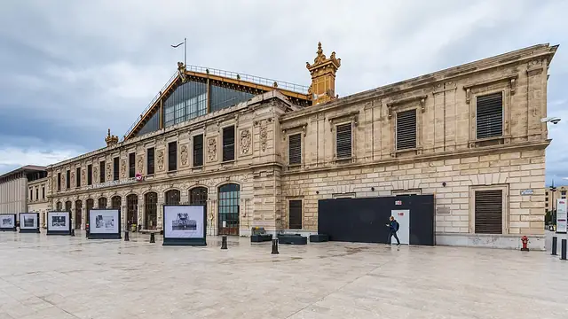
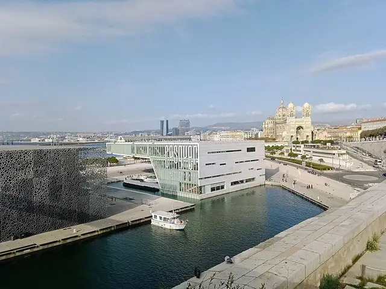

The Phocaean City
Marseille architecture
Founded around 600 BC by Greek settlers from Phocaea, Marseille is the oldest city in France and one of Europe's oldest continuously inhabited settlements. France's national anthem carries its name, too: 'La Marseillaise' got its title because volunteers from Marseille were the first to sing it in Paris in 1792.
- 15Landmarks
- 1200Oldest · Abbey of Saint-Victor
- 147 mTallest · CMA CGM Tower
- 11Architects
Map and Look Around
Tap a numbered pin to see that landmark from the street with Apple Look Around.
Eat and stay near
Restaurants
Hotels
From Apple Maps. Walking times are estimates from straight-line distance.
Before you go
- Fly intoMarseille Provence Airport (MRS)
Marseille Provence Airport lies about 27 km north-west of the city in Marignane and is the fifth-busiest airport in France by passenger traffic. Back in the 1920s and 1930s it was a base for flying boats, and a new Terminal 1 opened in June 2024. A bus links it with the nearby Vitrolles Marseille Provence Airport rail station.
- CurrencyEuro (€)
- LanguageFrench
French is spoken everywhere, but listen for the Marseille dialect, a melodious variety of French shaped by Provençal. The city's Occitan name is Marselha, and Arabic and Occitan are among the many languages heard in this busy Mediterranean port.
- Getting aroundMetro & Tramway
The Marseille Metro has two lines and 31 stations: Line 1 opened in 1977 and Line 2 in 1984, and like some Paris lines its trains run on rubber tyres. A modern tramway joined the network in 2007, and both are run by the RTM.
- Where to stayFind hotels in Marseille on Expedia Compare on Booking.com Vacation rentals on Vrbo
Stamped! may earn a commission when you book through these links.
- Tours and ticketsFind tours in Marseille on GetYourGuide More tours on Viator
Skip-the-line tickets and guided tours of the landmarks. Stamped! may earn a commission.
15 landmarks in Marseille
-
Unité d'Habitation
280 Boulevard Michelet, 13008 Marseille, France
Le Corbusier's 'Cité Radieuse' was built between 1947 and 1952 as a vertical village: 337 apartments in 23 different layouts, stacked across 12 storeys and lifted off the ground on massive pilotis. Post-war steel shortages meant it was cast in rough béton brut, and it is often cited as the spark for Brutalism. Wide interior 'streets in the sky' run along every third floor, shops and a hotel sit inside, and the rooftop has a running track and a children's paddling pool. UNESCO listed it in 2016.
- Built
- 1952
- Architect
- Le Corbusier
- Style
- Modernism
- Stories
- 12
- Today
- Apartment building & hotel
-

Photo: Holger Uwe Schmitt, CC BY-SA 4.0, via Wikimedia Commons MuCEM
Promenade Louis Brauquier, 13002 Marseille, France
The Museum of European and Mediterranean Civilisations opened in 2013, when Marseille was European Capital of Culture. Rudy Ricciotti, working with Roland Carta, wrapped a 15,000-square-metre cube in a lace-like latticework shell of fibre-reinforced concrete. It stands on reclaimed land at the harbour mouth, joined to the old Fort Saint-Jean by a 130-metre footbridge, and a rooftop terrace restaurant looks out over the bay. In 2015 it won the Council of Europe Museum Prize.
- Built
- 2013
- Architect
- Rudy Ricciotti & Roland Carta
- Today
- Museum
-
Photo: Earth777, CC BY-SA 4.0, via Wikimedia Commons Notre-Dame de la Garde
Montée Commandant René Valentin, 13006 Marseille, France
Locals call it 'la Bonne Mère' — the Good Mother — and this basilica is Marseille's best-known symbol, perched on a 149-metre limestone outcrop, the highest natural point in the city. Henri-Jacques Espérandieu designed it, and work began in 1853 on the foundations of an old fort. A Romanesque crypt is carved into the rock beneath a Neo-Byzantine church glowing with mosaics, while the 41-metre bell tower carries an 11.2-metre gilded Madonna and Child. A restoration ending in 2008 repaired bullet scars from the Liberation.
- Built
- 1897
- Architect
- Henri-Jacques Espérandieu
- Style
- Byzantine Revival
- Today
- Basilica
-
Photo: Ingo Mehling, CC BY-SA 3.0, via Wikimedia Commons Vieux-Port Pavilion
Quai de la Fraternité, Marseille, France
Greek sailors from Phocaea landed in this cove around 600 BC, and the Old Port has been Marseille's harbour ever since. When the quays were made largely pedestrian for 2013, Foster + Partners and landscape architect Michel Desvigne added the Ombrière: a giant mirrored canopy of polished stainless steel, about 1,000 square metres, held 6 metres above the quay on eight slender pillars. Look up and you see the crowds, the boats and the fish market reflected upside down overhead. It was inaugurated on 2 March 2013.
- Built
- 2013
- Architect
- Foster + Partners & Michel Desvigne
- Height
- 6 m (20 ft)
- Today
- Public canopy
-

Photo: Bertrand SOUBEYRAND, CC BY-SA 4.0, via Wikimedia Commons Marseille Cathedral
1 Avenue Robert Schuman, 13002 Marseille, France
La Major is one of the largest cathedrals in France: 142 metres long, with seats for 3,000 people and a main dome rising 70 metres above the waterfront. Emperor Napoleon III laid the foundation stone in 1852, and architects Léon Vaudoyer and Henri-Jacques Espérandieu finished it in 1896 in a grand Romanesque-Byzantine Revival style. It sits on a site used for Marseille's cathedrals since the 5th century, and part of the much smaller 12th-century Romanesque cathedral, the 'Vieille Major', still stands beside it.
- Built
- 1896
- Architect
- Léon Vaudoyer & Henri-Jacques Espérandieu
- Style
- Byzantine Revival
- Height
- 70 m (230 ft)
- Today
- Cathedral
-

Photo: Ajay Suresh from New York, NY, USA, CC BY 2.0, via Wikimedia Commons Palais Longchamp
Rue Édouard Stéphan, 13004 Marseille, France
This palace was built to celebrate water: it marks the arrival of the Canal de Marseille, which brought the River Durance to a thirsty city. The Duke of Orléans laid the first stone in 1839, but Henri-Jacques Espérandieu's design took 30 years to finish, opening with its park in 1869. At its heart is a château d'eau where water cascades from four bulls and three statues representing the Durance, grapes and wheat. Its two wings hold the city's fine arts museum and its natural history museum.
- Built
- 1869
- Architect
- Henri-Jacques Espérandieu
- Today
- Museums
-

Photo: bogdan1971, CC BY-SA 3.0, via Wikimedia Commons Fort Saint-Jean
Promenade Louis Brauquier, 13002 Marseille, France
Louis XIV built this fort at the entrance to the Old Port in 1660 after the people of Marseille rebelled against their governor — and its cannons pointed at the town, not the sea. It swallowed older buildings, including a 12th-century commandery of the Knights Hospitaller of St John, which gave the fort its name, and a 15th-century tower of King René. For generations of French Foreign Legion recruits it was the last stop before Africa. Wrecked by an explosion in 1944 and rebuilt in 1967–71, it became part of MuCEM in 2013.
- Built
- 1660
- Today
- Museum
-

Photo: Marian78ro, CC BY-SA 4.0, via Wikimedia Commons Château d'If
Île d'If, 13007 Marseille, France
On a tiny island 3.5 km west of the Old Port, this fortress was built for King Francis I between 1524 and 1531: a square, three-storey block 28 metres on each side, guarded by three towers. It never had to fight off an attack, but its isolation and strong currents made it one of France's most feared prisons, holding more than 3,500 Huguenots. Alexandre Dumas made it world-famous as the jail of Edmond Dantès in The Count of Monte Cristo. It opened to the public in 1890.
- Built
- 1531
- Stories
- 3
- Today
- Monument
-
Photo: Rberchie, CC BY-SA 4.0, via Wikimedia Commons CMA CGM Tower
Euroméditerranée, 13002 Marseille, France
Zaha Hadid's first tower rises 147 metres over the Euroméditerranée business district as the headquarters of shipping giant CMA CGM. Hadid won the commission in 2004, and the curving 33-storey tower, engineered by Arup, was completed in 2011 to bring 2,200 staff together from seven sites. It was designed to converse with the city's older landmarks, including the Château d'If and Notre-Dame de la Garde, which still sits higher on its rocky hill. It was the first major project of the Euroméditerranée renewal scheme.
- Built
- 2011
- Architect
- Zaha Hadid
- Height
- 147 m (482 ft)
- Stories
- 33
- Today
- Office tower
-

Photo: Unknown author, CC BY-SA 3.0, via Wikimedia Commons Vieille Charité
2 Rue de la Charité, 13002 Marseille, France
Hidden in the old Panier quarter, this former almshouse for the city's poor was designed by architect Pierre Puget and built between 1671 and 1749. Its blank outer walls of pink and yellow stone enclose three tiers of arcaded galleries around a large courtyard, with a Baroque chapel crowned by an oval dome at the centre. Over the centuries it served as a barracks and a refuge for displaced families before falling into ruin. Rescued in 1968 with help from culture minister André Malraux, it is now a museum and cultural centre.
- Built
- 1749
- Architect
- Pierre Puget
- Style
- Baroque
- Stories
- 3
- Today
- Museum & cultural centre
-

Photo: Bjs, CC BY-SA 4.0, via Wikimedia Commons Abbey of Saint-Victor
Rue de l'Abbaye, 13007 Marseille, France
The monk John Cassian founded this abbey in 415, naming it after the local martyr Victor, and its crypts sit in a quarry from the Greek era that later became a burial ground. Saracen raids destroyed it in 838 and 923, but Benedictine monks revived it, and its church was dedicated in 1040 and rebuilt around 1200. Pope Urban V, once its abbot, wrapped the abbey in high crenellated walls, giving it the look of a fortress. The church became a minor basilica in 1934.
- Built
- 1200
- Today
- Basilica
-

Photo: Bjs, CC BY-SA 4.0, via Wikimedia Commons Marseille City Hall
Quai du Port, 13002 Marseille, France
Standing on the Quai du Port, Marseille's Baroque town hall was begun in 1653 and finished in 1673 to designs by Gaspard Puget and Jean-Baptiste Méolans. Its symmetrical seven-bay front is framed by Corinthian columns, with a bust of Louis XIV by Martin Grosfils on the second floor. In 1943 it was one of only four buildings to survive when German forces demolished the surrounding district. A large, almost entirely underground extension by Franck Hammoutène, completed in 2006, won France's Équerre d'Argent architecture prize.
- Built
- 1673
- Architect
- Gaspard Puget & Jean-Baptiste Méolans
- Style
- Baroque
- Stories
- 3
- Today
- City hall
-

Photo: Sophie P., CC BY-SA 4.0, via Wikimedia Commons Stade Vélodrome
3 Boulevard Michelet, 13008 Marseille, France
Olympique de Marseille has played here since the stadium opened on 13 June 1937 with a match against Torino. Designed by Henri Ploquin, it has hosted the 1938 and 1998 FIFA World Cups, three European Championships, two Rugby World Cups and football at the 2024 Olympics. A renovation finished in 2014 by SCAU raised capacity to 67,394, making it the second-largest stadium in France after the Stade de France. Even the Tour de France has started and finished a stage inside it.
- Built
- 1937
- Architect
- Henri Ploquin; SCAU (2014 renovation)
- Today
- Stadium
-

Photo: Raimond Spekking, CC BY-SA 4.0, via Wikimedia Commons Marseille-Saint-Charles Station
Square Narvik, Marseille, France
Marseille's main station opened on 8 January 1848, built by the Paris–Lyon–Mediterranean railway on the site of the old Saint Charles Cemetery. Because it sits on a hill above the city centre, it is reached by a monumental staircase designed by Eugène Senès, opened in 1925 and lined with statues evoking the distant lands that ships sailed to from Marseille. The arrival of the TGV in 2001 transformed it, and a €230 million modernisation finished in 2007. In 2024 it handled 17.9 million passengers.
- Built
- 1848
- Today
- Railway station
-

Photo: Rémih, CC BY-SA 4.0, via Wikimedia Commons Villa Méditerranée
Promenade Robert Laffont, 13002 Marseille, France
Designed by Italian architect Stefano Boeri, the Villa Méditerranée opened in 2013 beside MuCEM as part of the Euroméditerranée renewal of the La Joliette waterfront. It began life as a conference centre during Marseille's year as European Capital of Culture. Since 2022 it has housed Cosquer Méditerranée, a replica of the Cosquer Cave, whose prehistoric rock art lies in a calanque near Marseille behind an entrance 37 metres under the sea. Visitors can now explore the art without diving.
- Built
- 2013
- Architect
- Stefano Boeri
- Today
- Museum


.jpg){kind=link}
.jpg){kind=link}


.jpg){kind=link}


The app's quiz · 10 questions
How well do you know Marseille?
The same quiz as in Stamped!: name the landmark, its architect, its style or the year it was finished. Every round is different.
Know Marseille well?
Locals know their city best. Suggest a landmark we're missing, a fix to one we have, or share your own photo of one. Every suggestion is checked before it goes into the app.
More cities in Europe
- Amsterdam
- Antwerp
- Athens
- Barcelona
- Bath
- Berlin
- Bilbao
- Brussels
- Budapest
- Copenhagen
- Cork
- Dublin
- Edinburgh
- Florence
- Glasgow
- Granada
- Hamburg
- Helsinki
- Istanbul
- Kraków
- Lisbon
- London
- Madrid
- Milan
- Munich
- Naples
- Nice
- Oslo
- Paris
- Porto
- Prague
- Reykjavik
- Riga
- Rome
- Rotterdam
- Salzburg
- Seville
- St. Petersburg
- Stockholm
- Tbilisi
- Valencia
- Venice
- Vienna
- Warsaw
- Zurich
Stamp all 15 in Stamped!
Fly through Marseille in photoreal 3D, take its 10-question quiz, plan your days and earn a passport stamp at every landmark. Free on iPhone, iPad, Mac and Apple Vision Pro.
Download on theApp StoreEnjoying the guides? Leave a tip to help keep new cities coming.